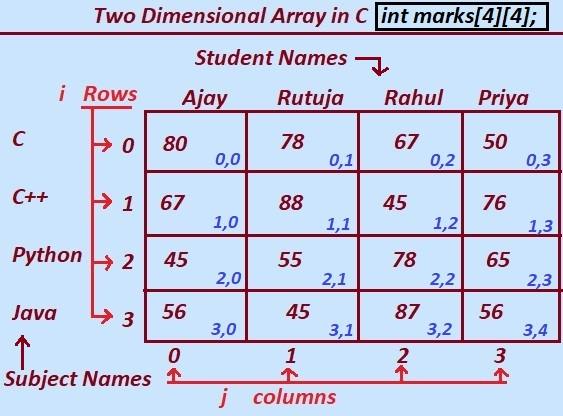

In this tutorial section let we learn the Basics of two dimensional array in C.
After reading this tutorial section you will be understand the Basics of two dimensional array.
Fisrt of all we shall have to know that what is two dimensional array?.
In general we can say that the two dimensional arrays are the collections of rows and columns.
Two Dimensional Array:
Two Dimensional array is a data structure that orgnizes and stores the data values in rows and columns, also known as matrix.
It can be refered as a grid, table or a rows and column arrangement of data values . for detail refer the diagram given below.
Two Dimensional array has some characteristics Let study them one by one.
1. Memory Allocation: In the C programming language the array can be created with fixed size and The memory allocated to the array values are in contineous block.
the array can be created with dyamic size and The memory allocated to the array values are in non-contiguous block.
2. indexing: The value or Elements in a two dimensional 2D array can be read or accessed by using a pair of indexes (i,j),where 'j' is the index for column and 'i' is the index for row .
Indexing in 2d array usually starts from 0,0 and ends at index (m-n,n-1).
so the top left element is at index (0, 0) and the bottom-right element is at the index (m-1, n-1).
3.Homogeneous Data Type:
A Two Dimensional array in c programming generally used to stores the elements or data values of the same type (e.g. strings or integers or floating-point numbers ).
Some programming language support heterogenious array which allows to store different type of data values.
4. Real Application or use case of 2D array:
2D arrays in c programming are commonly used in various domains and applications , including
scientific simulations, computer graphics, spreadsheets,
game boards,
image processing,
and adjacency matrices in graph theory.
5. Operations:
In c programming language various operation can be performend on array.
for e.g.
addition : addition of two matrices.
subtraction : subtraction of two matrices, multiplication , traversal array, sorting, searching array, and manipulations of individual elements.
2D Array in C programming.
Using 2d arrays in C programming, we can store numbers of values or data at one moment.
Let Learn from diagram, a class consists of 4 students named Ajay,Rutuja,Rahul,Priya and the class has to publish the result of all those students.
as shown in the figure,
we need a table to store all those four students names,marks and subjects names.
for that, we requires storing all information in a tabular form comprising rows and columns.
columns has the name of the students (Ajay,Rutuja,Rahul,Priya )and row has the name of subjects(C,C++,Python,Java).

2D Array in C programming.
Let us study how to perform different operations on matrix with help of given figure.
in given figure the name of the 2 dimensional array is marks.
The two dimensional array in C language is arranged in row and column, row is denoted by letter i which starts from index 0 and column denoted by j that starts from index 0.
The marks obtained by Student Ajay in C language is 80, that has been stored at position (0, 0) in 2D array Marks( first row(0) First column).
The marks obtained by Ajay in c language can be read using marks[0][0].
similary, the marks obtained by Priya in Python language is 65 can be read using marks[2][3], and so on....
however if we want to change the marks obtained by Rutuja in C++ then we can use
the syntax marks[1][1]=90.
the marks obtained by Rutuja in c++ changes to 90 now.
Similary we can change the marks obtained by students in different subjects.
Marks obtained by all students in all subject can be read at a time using for ,while loop in c programming language.
Note: The memory for array is allocated contiguously or continuously but not like the table structure. the given diagram is just for your understanding purpose.
Previous Topic:-->> Read and display 1D array in C || Next topic:-->>Declare 2D array.
Other Topics:
Variables and Identifiers Relational Operators if-else statements Switch case While Loop Infinite while Loops C FOR Loop Infinite for Loops Continue in Loops One Dimensional Array Two Dimensional Arrays Read and Display 2D Arrays Types of functions Passing Array To Functions Nesting of Function Array vs Structure Array of Structure Structures and Functions Structures Within Structures Use Of Pointers In C File Handling In C Loops FAQ Arrays FAQ count vowels in a file Function FAQ Conditional Statements Assignments For Loops Assignments Arrays Assignments Function Assignments Structure Assignments Pointers Assignments Files Assignments Storage classes Assignments Binary Files count words,lines in a file Copy files Update File Continue in Loops break in Loops Difference Between While and Do while difference while do..while & for malloc calloc Storage Classes Operators MCQ Conditional Statements MCQ Loops MCQ Arrays MCQ Function MCQ Structure MCQ Pointers MCQ Files MCQ Storage classes MCQ